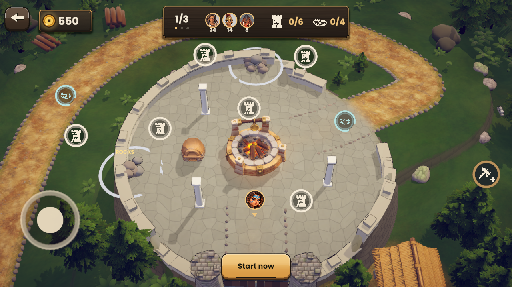
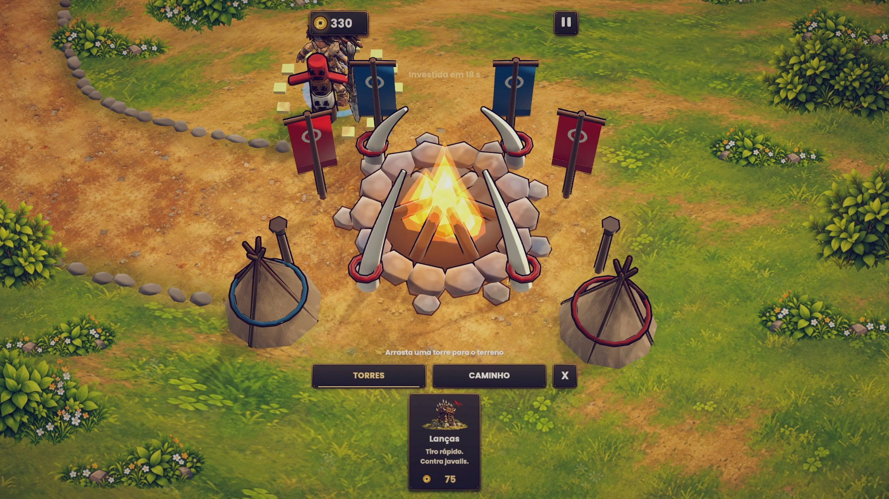
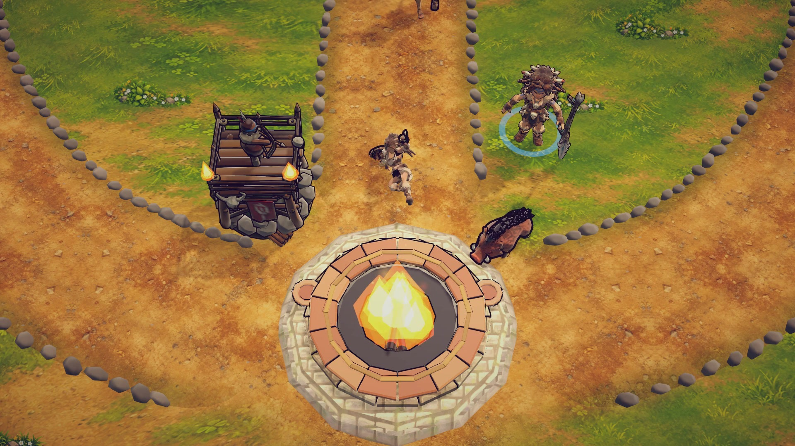

DEVELOPMENT UPDATE · 11 NOVEMBER 2026
From the gates to the Acropolis.
This update reduces the amount of geometry the game has to process in Loop, Gates, Quarry, Acropolis and Three Fronts. On the Acropolis, the game now prepares the pavement and checks where the heroine can move in smaller steps, so fewer tasks block the game at once as the map loads.


GAMEPLAY & SCREENSHOTS
See the fire.
Feel the battle.
An early look at Tavruka in motion, with footage and screenshots captured in game.
IN MOTION
Into the battle.
See the defenses, the heroine and the horde in an early look at Tavruka.
DEVELOPMENT GAMEPLAY27 October 2026 · Early footage; visuals may change
Preview recorded before later animation changes. Music is a temporary project track.
OCTOBER DEVELOPMENT GALLERY
Every defense.
Every decision.
A closer look at the world of Tavruka, captured in game.

